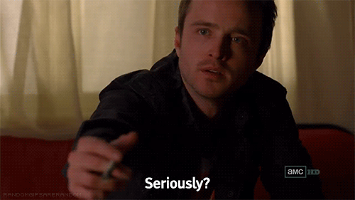

Wonderful Flexbox

Leaving Box Model to Die.
by Jeremy Wagner — @malchata
git this talk: github.com/malchata/flexbox-presentation
The Days of Old
Styling the Young Web

Seemed Great at The Time
(But in retrospect...)
Tables, Anyone?
With a side of spacer GIFs, perhaps?